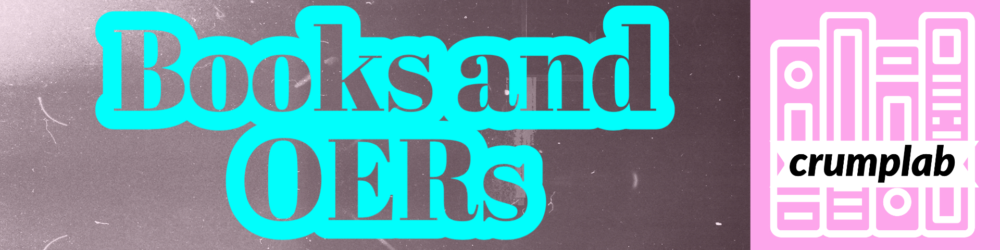

~/crumplab/books
Books
These books were made using Quarto, or R Markdown and Bookdown. They are all free, open-source, and licensed on creative commons.
10 books & resources 9 creative-commons licensed 9 with source on GitHub
No matching items
┌─ shelf10

Instances of Cognition
This is a free, open-educational textbook and set of course materials for an introductory undergraduate course in cognition. The materials have been in continuous development since Fall 2021. All of the materials are CC BY-SA 4.0 creative-commons licensed and free for others to use, copy, remix, re-use.

Reproducible statistics for psychologists with R: Lab Tutorials
This is a series of labs/tutorials for a two-semester graduate-level statistics sequence in Psychology @ Brooklyn College of CUNY. The first set of 13 labs roughly tracks “Thinking with Data” (Vokey & Allen, 2018) and “Answering questions with data” (Crump et al., 2018); the second set of labs (to be written on a weekly basis during the Spring 2021 semester) roughly tracks “Experimental Design and Analysis for Psychology” (Abdi et al., 2009).
Using R for Reproducible Research: Student contributed tutorials
These chapters were written by students in PSYC 7709: Using R for Reproducible research, Spring 2019 @ Brooklyn College of CUNY, as a part of their final project to write a tutorial about an R package.

Answering Questions with Data: Introductory Statistics for Psychology Students
This is a free introductory statistics textbook for undergraduates in Psychology. It is being developed as an Open Educational Resource @ Brooklyn College. It is pitched at the concepts behind statistics, and often uses simulation in R to convey foundational ideas. The writing style is sometimes a bit unconventional, and informal. It is for students who don’t want to like statistics.
Authors Matthew Crump; Chapters 2 and 4 adapted from Navarro, D.; Videos: Jeffrey Suzuki

Answering Questions with Data: The Lab Manual
Lab activities using R, Excel, SPSS, and JAMOVI
This is the companion lab manual to our free stats book. It contains lab activities for learning how to conduct statistical tests in R, Excel, SPSS, and JAMOVI. We use open data, often from psychology papers, and show step-by-step how to solve data-analysis problems in each software package.
Authors Matthew Crump (R); Stephen Volz (Excel); Alla Chavarga (SPSS); Anjali Krishnan (JAMOVI)
Some of the labs are adapated from Open Stats Lab, another great resource.
Answering Questions with Data: The Course Website
A copiable course website for introductory statistics
This website was created in R Markdown. It contains most of the course materials I use when teaching undergraduate statistics for psychology. IT includes slide decks for presentations.
Authors Matthew Crump

Research Methods for Psychology
A free Research methods textbook for undergraduates in Psychology, creative commons license, remix, reuse, edit, contribute.
Authors Matthew J. C. Crump, Paul C. Price, Rajiv Jhangiani, I-Chant A. Chiang, Dana C. Leighton
Cognitive Technologies: From Theory and Data to Application
A series of chapters on cognitive technologies written by doctoral students who took my course on Cognitive Technologies in Spring 2018. They wrote it, I compiled it using bookdown.
Editor Crump, M. J. C
Authors Crump, M. J. C.; Amada, N.; Bourque, K; Brosowsky, N.; Ergun, T.; Korovatskaya, A.; Ma, X.; Seoung, Y.; Wylie, J.
Open tools for writing open interactive textbooks (and more)
tutorial overview of the process I use to write books using R, R-studio, R-markdown, and compile them in bookdown. I’ve used this process for all of these books. Some other brief tidbits on using hypothes.is, and R-Shiny apps, also Zotero and hosting on github pages (where this website is hosted)
Author Matthew J. C. Crump
Note this is a meta-book. The tutorial above is for you to read so you can download the source code, then compile it yourself, then edit it to make your own.

Programming for Psychologists: Data Creation and Analysis
Some notes that got big enough to make a book. Beginner introduction to coding in R, Livecode, and some web-programming, for the purposes of making data with computers (programming experiments), and analyzing it in R.
Author Matthew J. C. Crump
No matching items